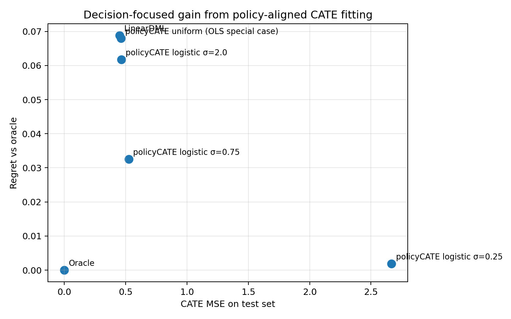
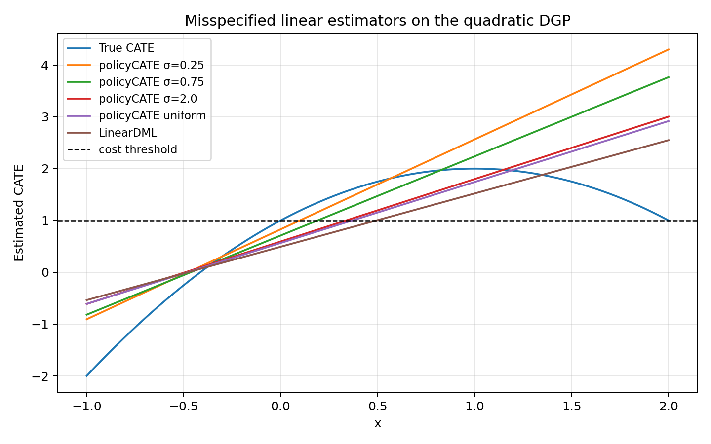

from pathlib import Pathimport pandas as pdBASE = Path('/Users/alal/tmp/cate_policy')ASSETS = BASE /'report_assets'summary = pd.read_csv(ASSETS /'summary.csv')summary_rounded = summary.copy()for col in summary_rounded.columns[1:]: summary_rounded[col] = summary_rounded[col].map(lambda x: round(float(x), 4))summary_rounded
method
profit_mean
profit_sd
regret_mean
regret_sd
mse_mean
mse_sd
0
Oracle
0.4451
0.0024
0.0000
0.0000
0.0000
0.0000
1
policyCATE logistic σ=0.25
0.4432
0.0041
0.0018
0.0034
2.6670
2.2311
2
policyCATE logistic σ=0.75
0.4126
0.0153
0.0325
0.0152
0.5249
0.0797
3
policyCATE logistic σ=2.0
0.3833
0.0175
0.0617
0.0175
0.4639
0.0142
4
policyCATE uniform (OLS special case)
0.3771
0.0177
0.0680
0.0176
0.4615
0.0103
5
LinearDML
0.3763
0.0047
0.0688
0.0042
0.4505
0.0029
What this is
I pulled the TeX source for arXiv:2512.13400 and implemented the paper’s linear M-estimator in trex.policy_learning.policyCATElearner.
The comparison below uses the paper’s simple quadratic DGP, but with a deliberately misspecified linear CATE model. That is the case where the paper argues decision-focused fitting should help most.
treatment cost: c = 1
train size per replication: 4000
test size per replication: 30000
replications: 25
regret: oracle profit minus realized policy profit
Methods compared
Oracle assignment
econml.dml.LinearDML
policyCATElearner with logistic surrogate at three σ values
policyCATElearner with the uniform surrogate, which collapses to transformed-outcome OLS
Summary table
Show code
summary_rounded
method
profit_mean
profit_sd
regret_mean
regret_sd
mse_mean
mse_sd
0
Oracle
0.4451
0.0024
0.0000
0.0000
0.0000
0.0000
1
policyCATE logistic σ=0.25
0.4432
0.0041
0.0018
0.0034
2.6670
2.2311
2
policyCATE logistic σ=0.75
0.4126
0.0153
0.0325
0.0152
0.5249
0.0797
3
policyCATE logistic σ=2.0
0.3833
0.0175
0.0617
0.0175
0.4639
0.0142
4
policyCATE uniform (OLS special case)
0.3771
0.0177
0.0680
0.0176
0.4615
0.0103
5
LinearDML
0.3763
0.0047
0.0688
0.0042
0.4505
0.0029
Profit-regret tradeoff

Fitted CATE curves on one draw

Paper distillation
Here is the implementation-level distillation of the paper.
Core idea
The paper starts from the firm’s targeting rule: treat when the true CATE exceeds the treatment cost \(c\).
Instead of optimizing a hard threshold at \(c\), it randomizes the threshold as \(C \sim F_C(c, \sigma)\) and maximizes the resulting smooth surrogate. At the population level, for a scalar candidate effect \(\tau\), the objective is
This is basically weighted residual fitting, but the weights are endogenous and largest near the decision boundary. That is the paper’s “Decision Attention” mechanism.
large \(\sigma\): broad weighting, close to ordinary transformed-outcome MSE
small \(\sigma\): concentrated weighting near \(\tau \approx c\), closer to direct policy optimization
which recovers transformed-outcome OLS as a special case.
Why this is useful
The framework continuously interpolates between three familiar objects:
plug-in CATE estimation via squared error
direct policy optimization as \(\sigma \to 0\)
entropy-regularized sigmoid policy learning under the logistic choice
So it is not just a new loss. It is a clean bridge between prediction-focused CATE estimation and profit-focused policy learning.
Practical implementation takeaways
For implementation, the paper strongly suggests:
start with the logistic surrogate
use regularization, especially when \(\sigma\) is small
warm start along a continuation path from large \(\sigma\) to small \(\sigma\)
tune \(\sigma\) on held-out policy value if profit is the real target
That is exactly why the small-\(\sigma\) model in the comparison above can have much worse global CATE MSE but much lower regret.
Read
A few things stand out.
Small \(\sigma\) sharply reduces regret, even though it makes global CATE MSE much worse.
The uniform special case behaves like plain transformed-outcome OLS.
LinearDML is competitive on MSE, but on this misspecified decision problem it still leaves materially more profit on the table than the tighter policy-focused surrogate.
This is exactly the paper’s point: if the business objective is treatment assignment, uniform accuracy is not the right target.